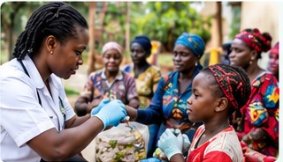
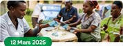
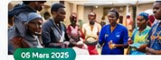
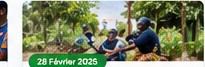

♡
Santé et bien-être
Prévention, dépistage,
prise en charge.
L'ONG LA TABALA collecte des données de santé, évalue les personnes, les cadres et les structures de santé et valorise les meilleurs acteurs.
LA TABALA intervient dans plusieurs secteurs clés pour améliorer les conditions de vie des communautés.
En savoir plus →Prévention, dépistage,
prise en charge.
Protection de l'environnement
et développement agricole.
Formation, information,
sensibilisation,
alphabétisation.
Soutien aux communautés
vulnérables.
Citoyenneté, vulgarisation
des lois, paix sociale.

Promouvoir la santé, améliorer les conditions de vie des communautés, renforcer la gouvernance locale, protéger l'environnement, promouvoir l'éducation, la citoyenneté, l'égalité et la solidarité.
En savoir plus →Devenir l'une des plateformes des organisations de la société civile guinéenne de jeunes citoyens actifs dans la communauté.
Des acteurs de terrain au service de la santé
Médecine générale – Guinée
Soins et accompagnement
Direction et coordination
Gestion et qualité
Les dernières nouvelles de LA TABALA

Une grande mobilisation pour la santé des communautés.
Lire la suite →
Renforcement des capacités et engagement citoyen.
Lire la suite →
Une action en faveur d'un environnement plus vert.
Lire la suite →Notre vidéo institutionnelle présentera nos équipes, nos actions, nos communautés et nos engagements.
Soutenez nos actions pour une meilleure prévention, une prise en charge efficace et un accès équitable aux soins.
Pour toute information, partenariat ou collaboration, notre équipe reste à votre disposition.
tabalaconakry2011@gmail.com
(00224) 622 17 27 87
624 35 35 59
Yimbaya Tannérie
Commune de Matoto – Conakry